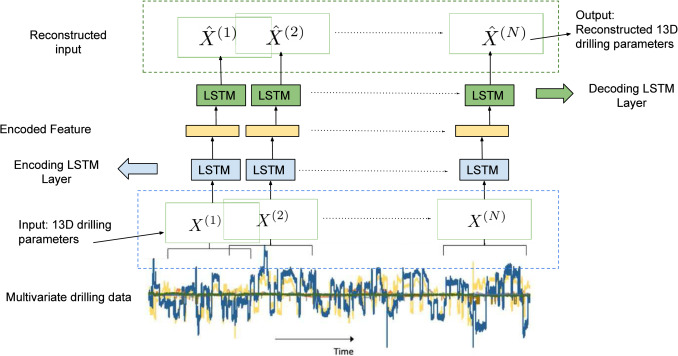
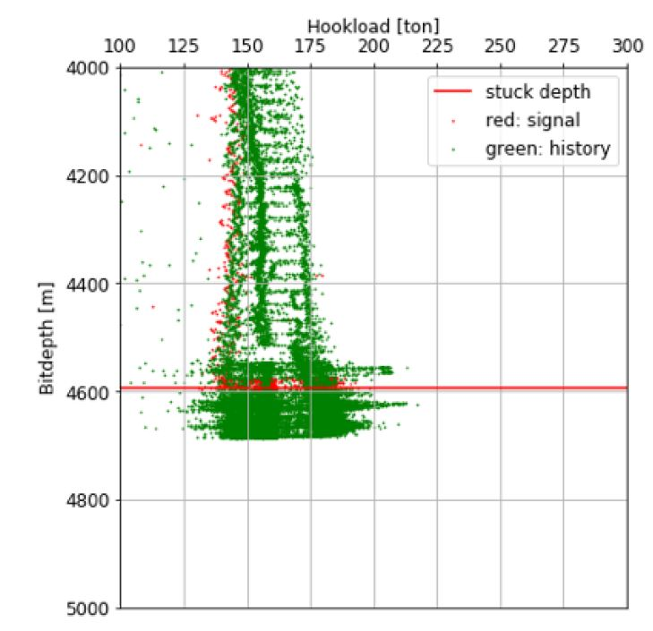

ML applied to diverse disciplines
|  |
Konda Reddy Mopuri, H. Bilen, N. Tsuchihashi, R. Wada, T. Inoue, K. Kusanagi, T. Nishiyama, H. Tamamura in the Journal of Petroleum Science and Engineering (2022) (Impact Factor: 4.35) [Link] We adapt Autoencoder for anticipating the ‘stuck’ events during the drilling process. We build Autoencoders on Recurrent Neural Networks (RNNs) to model the normal drilling activity, thereby detecting the stuck incidents as anomalous activity. We conduct experiments on the drilling data collected from 30 field wells with diverse well profiles and demonstrate that our approach obtains promising results for the stuck sign detection. Furthermore towards explaining the trained model’s prediction, we present reconstruction analysis on the individual drilling parameters. |
|
Yujin Nakagawa, Tomoya Inoue, Hakan Bilen, Konda R. Mopuri Keisuke Miyoshi, Shungo Abe, Ryota Wada, Kouhei Kuroda, Hitoshi Tamamura SPE/IATMI Asia Pacific Oil & Gas Conference and Exhibition (2021) [Link] This technique is an unsupervised learning model built using an encoder-decoder, long short-term memory architecture. The model is trained with the time series data of normal drilling operations and based on an important hypothesis: reconstruction errors between observed and predicted values are higher around the time of pipe sticking than during normal drilling operations. The trained model was then applied to 34 actual stuck-pipe events, where it was found that reconstruction errors increased prior to the pipe sticking in some cases (thereby partly confirming our hypothesis) and were sensitive to large variations in the drilling parameters. |
|  |
N. Tsuchihashi, R. Wada, M. Osaki, T. Inoue, K. R. Mopuri, H. Bilen, T. Nishiyama, K. Fujita, K. Kusanagi. SPE Journal (2021) (Impact Factor: 3.48, Scopus Rank: #4/189) [Link] Early signs of stuck pipe are assumed to show common patterns in the monitored data set, and designing a data clip that well captures these features is critical for efficient prediction. We propose a 3D-convolutional neural network (CNN) approach with depth-domain data clip. The clip illustrates depth-domain data in 2D-histogram images with unique abstraction of the time domain. The 3D-CNN model has successfully detected early signs of stuck in three cases before the occurrence. The portion of the data clip contributing to anomaly detection is indicated by gradient-weighted class activation map (grad-CAM), providing physical explanation of the black box model. We consider such explanation inevitable for the drilling engineers to interpret the signs for rational decision-making. |